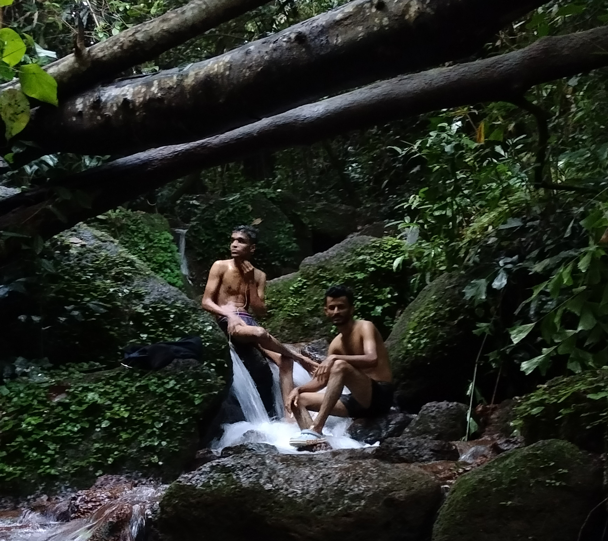
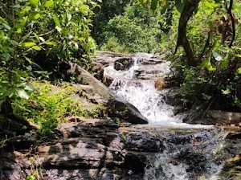
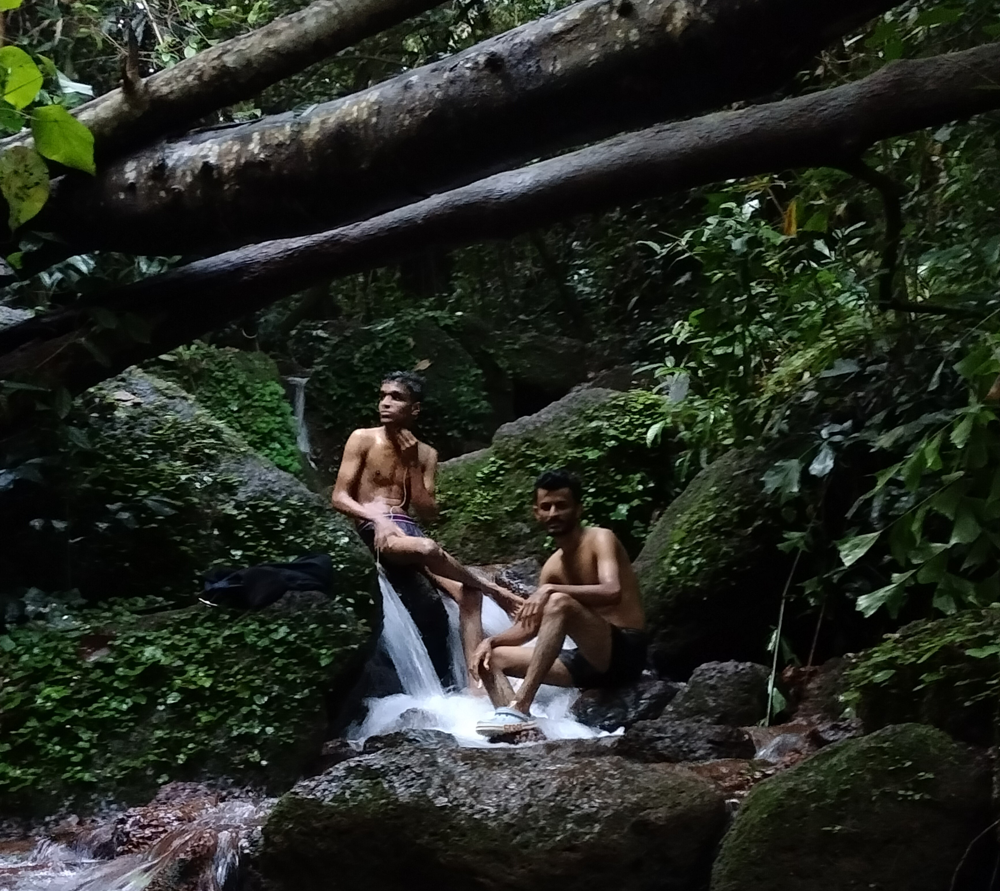
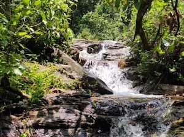

Explore More of Abri Falls
 



Arbi Falls is a hidden gem located near Udupi in Karnataka, known for its serene and natural beauty. Nestled amidst lush greenery, this waterfall offers a tranquil escape for nature lovers and adventure seekers. Unlike larger and more crowded waterfalls, Arbi Falls maintains a calm and peaceful atmosphere, making it ideal for those seeking solitude and relaxation.
The waterfall cascades down a rocky terrain, forming a gentle stream that is perfect for a refreshing dip or simply soaking your feet while enjoying the surroundings. The dense vegetation around the falls adds to its charm, providing a cool and shaded environment. During the monsoon season, the waterfall comes alive, with the water gushing down with more vigor, creating a mesmerizing spectacle.
Arbi Falls is easily accessible from Udupi, making it a popular spot for locals and tourists alike. It is a great place for a short trek, picnics, or just spending time immersed in the beauty of nature. However, it’s recommended to visit during daylight hours, as the area may lack proper lighting and amenities.
If you're in Udupi or nearby regions, a visit to Arbi Falls is a must to experience its serene ambiance and the refreshing charm of this natural wonder.